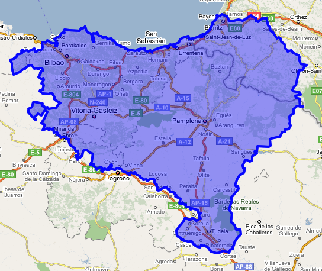
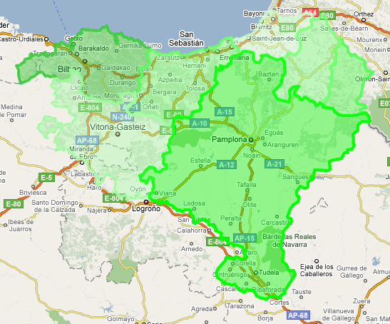

Euskal Herria Google mapetan
Nola erakutsi Euskal Herria Google Mapetan? Orri honetan dituzu behar
dituzun elementu guztiak.


Adibideak
Mugak kodifikatuta
Mugak
Erabili diren muga guztiak (latitudea-longitudea formatuan), hauek:
- ehmuga.txt Euskal Herria, 5300 puntu
-
eae.txt Euskal Autonomia Elkartea, 4900 puntu
-
iparraldea.txt Iparraldea, 1900 puntu
- nafarroa.txt Nafarroa, 2900 puntu
- araba.txt Araba, 1100 puntu
- bizkaia.txt Bizkaia, 1600 puntu
- gipuzkoa.txt Gipuzkoa, 2500 puntu
- lapurdi.txt Lapurdi, 1000 puntu
- nafarroa.txt Nafarroa, 2900 puntu
- nb.txt Nafarroa Beherea, 800 puntu
- zuberoa.txt Zuberoa, 400 puntu
Oharra: puntuak Google Mapsen eta eskuko mapa baten
laguntzaz markatu dira. Probintzien arteko mugak gutxi gorabeherakoak
dira; baita Iparraldearen eta Franziaren arteko muga ere.
Kredituak